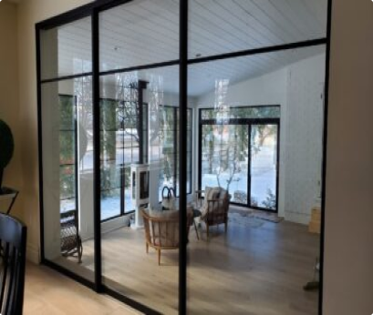

Pourquoi choisir des portes coulissantes plutôt que deRs portes pivotantes pour votre maison
En ce qui concerne les portes intérieures, il existe deux types principaux : les portes coulissantes et les portes pivotantes.
Avr 24, 2023